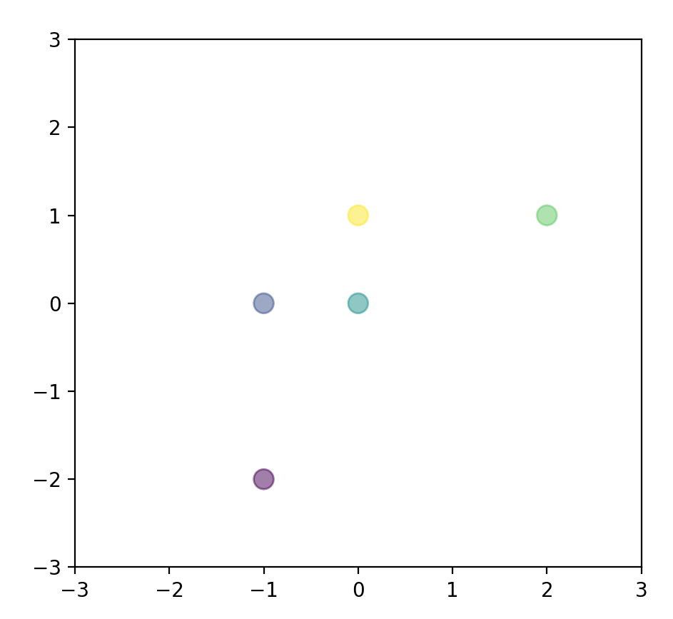

主成分分析(PCA)
PCA的主要目标是将特征维度变小, 同时尽量减少信息损失. PCA通过线性变换将n维原始特征映射到维（k < n）上, 称这k维特征为主成分. 新构造出的k维特征相互正交, 且k维数据尽可能多地包含原始数据的信息.
新的维度要能区分数据, 就要求此维度上数据间的方差足够大. 构造新的正交向量, 使得任何数据投影的第一大方差在第一个坐标(称为第一主成分)上, 第二大方差在第二个坐标(第二主成分)上, 依次类推.
假设原先的样本数据是m条特征数为n的数据集, 排列成n行m列的矩阵 X = ( x 1 , x 2 , ⋯ , x m ) X = (x_1,x_2,\cdots,x_m) X = ( x 1 , x 2 , ⋯ , x m ) x i x_i x i i i i
(维度的)协方差矩阵
一个维度的方差是每个元素与该维度均值的差的平方和的均值, 即
V a r ( a ) = 1 m Σ i = 1 m ( a i − a ˉ ) 2 = 1 m ( Σ i = 1 m a i 2 − m a ˉ 2 ) Var(a) = \frac 1 m \Sigma_{i=1}^m (a_i - \bar a)^2 = \frac 1 m (\Sigma_{i=1}^m a_i^2 - m\bar a^2)
Va r ( a ) = m 1 Σ i = 1 m ( a i − a ˉ ) 2 = m 1 ( Σ i = 1 m a i 2 − m a ˉ 2 )
如果把每个维度都零均值化, 方差就是该行的内积.
同样的, 不同维度间的协方差在零均值化后也可以写作两个行向量的内积, 于是 n n n
C = 1 m X ⋅ X T C = \frac 1 m X\cdot X^T
C = m 1 X ⋅ X T
注意：如果要无偏估计协方差, 分母应当是 m − 1 m-1 m − 1
协方差矩阵一定是半正定的 , 任取一个向量 x x x x T C x = x T X ⋅ X T x = ( x T X ) ( x T X ) T ≥ 0 x^TCx = x^TX \cdot X^Tx = (x^TX)(x^TX)^T \ge 0 x T C x = x T X ⋅ X T x = ( x T X ) ( x T X ) T ≥ 0
实对称矩阵一定可以对角化 , 即存在一个正交矩阵 P P P P T C P = Λ P^TCP = \Lambda P T CP = Λ C C C λ 1 ≥ λ 2 ≥ ⋯ ≥ λ n ≥ 0 \lambda_1 \ge \lambda_2 \ge \cdots \ge \lambda_n \ge 0 λ 1 ≥ λ 2 ≥ ⋯ ≥ λ n ≥ 0
坐标变换
回顾一下坐标变换的知识. 样本数据在基 e 1 , e 2 , ⋯ , e n e_1,e_2,\cdots,e_n e 1 , e 2 , ⋯ , e n x 1 , x 2 , ⋯ , x m x_1,x_2,\cdots,x_m x 1 , x 2 , ⋯ , x m
另外取一组单位正交基 { η 1 , η 2 , ⋯ , η n } \{\eta_1,\eta_2,\cdots,\eta_n\} { η 1 , η 2 , ⋯ , η n } ( η 1 , η 2 , ⋯ , η n ) − 1 ( x 1 , x 2 , ⋯ , x m ) (\eta_1,\eta_2,\cdots,\eta_n)^{-1}(x_1,x_2,\cdots,x_m) ( η 1 , η 2 , ⋯ , η n ) − 1 ( x 1 , x 2 , ⋯ , x m )
考虑上述的正交矩阵 P P P P T P^T P T P P P x x x P − 1 x = P T x P^{-1}x = P^Tx P − 1 x = P T x P T X P^TX P T X
C n e w = 1 m ( P T X ) ( P T X ) T = Λ C_{new} = \frac 1 m (P^TX)(P^TX)^T = \Lambda
C n e w = m 1 ( P T X ) ( P T X ) T = Λ
如果只考虑 P T P^T P T k k k P k T P_k^T P k T n n n k k k k k k
1 m ( P k T X ) ( P k T X ) T = diag { λ 1 , ⋯ , λ k } \frac 1 m (P_k^TX)(P_k^TX)^T = \text{diag} \{\lambda_1,\cdots,\lambda_k\}
m 1 ( P k T X ) ( P k T X ) T = diag { λ 1 , ⋯ , λ k }
一个极端情况
考虑一个极端情况, 如果 λ n = 0 \lambda_n = 0 λ n = 0 n n n n − 1 n-1 n − 1
上述 P T C P = Λ P^TCP = \Lambda P T CP = Λ C ( p 1 , ⋯ , p n ) = P Λ = ( λ 1 p 1 , ⋯ , λ n p n ) C(p_1,\cdots, p_n) = P \Lambda = (\lambda_1 p_1, \cdots, \lambda_n p_n) C ( p 1 , ⋯ , p n ) = P Λ = ( λ 1 p 1 , ⋯ , λ n p n ) { p 1 , ⋯ , p n } \{p_1,\cdots, p_n\} { p 1 , ⋯ , p n } n n n
对于任意 n n n x x x x = Σ i = 1 n x i p i x = \Sigma_{i=1}^n x_i p_i x = Σ i = 1 n x i p i
C x = C Σ i = 1 n x i p i = Σ i = 1 n x i λ i p i Cx = C\Sigma_{i=1}^n x_i p_i = \Sigma_{i=1}^n x_i \lambda_i p_i
C x = C Σ i = 1 n x i p i = Σ i = 1 n x i λ i p i
注意到对应的 λ n = 0 \lambda_n = 0 λ n = 0 x n x_n x n
同样地, 特征值是零的特征向量在坐标变换后对应维度的方差是零, 在零均值的前提下意味着所有坐标在这个维度都是0, 因此取这一维度完全无法区分各个数据点, 和不取的效果是一样的. 对于特征值较小的情况同理, 各个坐标在这一维度密集分布于零附近, 区分度很小.
PCA 的思路
考虑以 P P P
如果只能保留一个维度, 为了获得尽可能大的方差, 应该选择最大特征值对应的特征向量作为坐标(称为第一主成分). 如果解释力不够, 应当增加第二大的特征值对应的特征向量作为坐标……以此类推, 直到解释力达到要求.
对于特征值是零的那些维度, 上文已经讨论, 他们的存在与否完全没有影响, 因此可以直接省略.
主成分所占整个信息的百分比可以如下计算：
Σ i = 1 k σ i 2 Σ i = 1 n σ i 2 \sqrt{\frac{\Sigma_{i=1}^k \sigma_i^2}{\Sigma_{i=1}^n\sigma_i^2}}
Σ i = 1 n σ i 2 Σ i = 1 k σ i 2
PCA 算法的步骤
假设有m条n维数据.
将原始数据排列成n行m列的矩阵, 并将矩阵的每一行 (每一个维度) 零均值化后记为 X X X
求出 X X X C = 1 m X X t C = \frac 1 m XX^t C = m 1 X X t
求出协方差矩阵的特征值以及对应的特征向量
将特征向量按照特征值由大到小排列(协方差矩阵是半正定的, 对应的所有特征值都大于等于零), 取前 k k k P P P
Y = P X Y = PX Y = PX k k k
简单数值的例子
X = [ − 1 − 1 0 2 0 − 2 0 0 1 1 ] X = \begin{bmatrix}
-1 & -1 & 0 & 2 & 0 \\
-2 & 0 & 0 & 1 & 1
\end{bmatrix} X = [ − 1 − 2 − 1 0 0 0 2 1 0 1 ]
现在用PCA方法将二维数据降到一行.

C = 1 5 ( − 1 − 1 0 2 0 − 2 0 0 1 1 ) ( − 1 − 2 − 1 0 0 0 2 1 0 1 ) = ( 6 5 4 5 4 5 6 5 ) C = \frac 1 5 \left( \begin{matrix}
-1 & -1 & 0 & 2 & 0 \\
-2 & 0 & 0 & 1 & 1
\end{matrix}\right)
\left( \begin{matrix}
-1 & -2 \\
-1 & 0 \\
0 & 0 \\
2 & 1 \\
0 & 1
\end{matrix}\right)
= \left( \begin{matrix}
\frac 6 5 & \frac 4 5 \\
\frac 4 5 & \frac 6 5
\end{matrix}\right) C = 5 1 ( − 1 − 2 − 1 0 0 0 2 1 0 1 ) − 1 − 1 0 2 0 − 2 0 0 1 1 = ( 5 6 5 4 5 4 5 6 )
求协方差矩阵的特征值与特征向量, 得到特征向量为 λ 1 = 2 , λ 2 = 2 5 \lambda_1 = 2, \lambda_2 = \frac 2 5 λ 1 = 2 , λ 2 = 5 2
p 1 = ( 2 2 − 2 2 ) , p 2 = ( 2 2 2 2 ) p_1 = \left( \begin{matrix}
\frac {\sqrt 2} 2\\
-\frac {\sqrt 2} 2
\end{matrix}\right),
p_2 = \left( \begin{matrix}
\frac {\sqrt 2} 2\\
\frac {\sqrt 2} 2
\end{matrix}\right) p 1 = ( 2 2 − 2 2 ) , p 2 = ( 2 2 2 2 )
-矩阵 P P P
P = ( 2 2 2 2 − 2 2 2 2 ) P = \left( \begin{matrix}
\frac {\sqrt 2} 2 & \frac {\sqrt 2} 2\\
-\frac {\sqrt 2} 2 & \frac {\sqrt 2} 2
\end{matrix}\right) P = ( 2 2 − 2 2 2 2 2 2 )
用 P P P X X X
Y = ( 2 2 2 2 ) ( − 1 − 1 0 2 0 − 2 0 0 1 1 ) = ( − 3 2 2 − 2 2 0 3 2 2 − 2 2 ) Y= \left( \begin{matrix}
\frac {\sqrt 2} 2 & \frac {\sqrt 2} 2
\end{matrix}\right)
\left( \begin{matrix}
-1 & -1 & 0 & 2 & 0 \\
-2 & 0 & 0 & 1 & 1
\end{matrix}\right)
= \left( \begin{matrix}
-\frac{3 \sqrt 2}{2} & -\frac{\sqrt 2}{2} & 0 & \frac{3 \sqrt 2}{2} & -\frac{\sqrt 2}{2}
\end{matrix}\right)
Y = ( 2 2 2 2 ) ( − 1 − 2 − 1 0 0 0 2 1 0 1 ) = ( − 2 3 2 − 2 2 0 2 3 2 − 2 2 )
可见, 新的坐标轴是过原点的45度的斜线, 所有点的投影在这条线上最分散.
引用一个网上的python程序代替人肉计算：
1 2 3 4 5 6 7 8 9 10 11 12 13 14 15 16 17 18 19 20 21 22 23 24 25 26 import numpy as npdef pca (X,k ): n_samples, n_features = X.shape mean=np.array([np.mean(X[:,i]) for i in range (n_features)]) norm_X=X-mean scatter_matrix=np.dot(np.transpose(norm_X),norm_X) eig_val, eig_vec = np.linalg.eig(scatter_matrix) eig_pairs = [(np.abs (eig_val[i]), eig_vec[:,i]) for i in range (n_features)] eig_pairs.sort(reverse=True ) feature=np.array([ele[1 ] for ele in eig_pairs[:k]]) data=np.dot(norm_X,np.transpose(feature)) return data X = np.array([[-1 , -2 ], [-1 , 0 ], [0 , 0 ], [2 , 1 ], [0 , 1 ]]) print (pca(X,1 ))
PCA 的一些性质
**缓解维度灾难：**PCA 算法通过舍去一部分信息之后能使得样本的采样密度增大（因为维数降低了）, 这是缓解维度灾难的重要手段；
**降噪：**当数据受到噪声影响时, 最小特征值对应的特征向量往往与噪声有关, 将它们舍弃能在一定程度上起到降噪的效果；
**过拟合：**PCA 保留了主要信息, 但这个主要信息只是针对训练集的, 而且这个主要信息未必是重要信息. 有可能舍弃了一些看似无用的信息, 但是这些看似无用的信息恰好是重要信息, 只是在训练集上没有很大的表现, 所以 PCA 也可能加剧了过拟合；
**特征独立：**PCA 不仅将数据压缩到低维, 它也使得降维之后的数据各特征相互独立；
PCA 与 SVD
特征值和特征向量是针对方阵才有的, 而对任意形状的矩阵都可以做奇异值分解.
SVD：矩阵的奇异值分解其实就是对于矩阵 A A A A T A A^TA A T A A A T AA^T A A T
A m , n = U m , m Λ m , n V n , n T ≈ U m , k Λ k , k V k , n T A_{m,n} = U_{m,m}\Lambda_{m,n}V_{n,n}^T \approx U_{m,k}\Lambda_{k,k}V_{k,n}^T
A m , n = U m , m Λ m , n V n , n T ≈ U m , k Λ k , k V k , n T
其中：U , V U, V U , V Λ \Lambda Λ n n n 0 0 0 k k k
A T A = ( U Λ V T ) T ( U Λ V T ) = V Λ T U T U Λ V T = V λ 2 V T A^TA = (U\Lambda V^T)^T(U\Lambda V^T) = V\Lambda^T U^T U \Lambda V^T = V\lambda^2V^T
A T A = ( U Λ V T ) T ( U Λ V T ) = V Λ T U T U Λ V T = V λ 2 V T
A A T = ( U Λ V T ) ( U Λ V T ) T = U Λ V T V Λ T U T = U Λ 2 U T AA^T = (U\Lambda V^T)(U\Lambda V^T)^T = U\Lambda V^TV\Lambda^TU^T = U\Lambda^2U^T
A A T = ( U Λ V T ) ( U Λ V T ) T = U Λ V T V Λ T U T = U Λ 2 U T
所以, V , U V,U V , U A T A , A A T A^TA, AA^T A T A , A A T A T A A^TA A T A A A T AA^T A A T A A A A T A A^TA A T A
PCA 需要对协方差矩阵 C = 1 m X X T C = \frac 1 m XX^T C = m 1 X X T A T A A^TA A T A A = X T m A = \frac{X^T}{\sqrt m} A = m X T
而实际上 Sklearn 的 PCA 就是用 SVD 进行求解的, 原因有以下几点：
当样本维度很高时, 协方差矩阵计算太慢；
方阵特征值分解计算效率不高；
SVD 除了特征值分解这种求解方式外, 还有更高效更准确的迭代求解方式, 避免了 A T A A^TA A T A
其实 PCA 与 SVD 的右奇异向量的压缩效果相同.
1 2 3 4 5 6 7 8 from sklearn.decomposition import PCAimport numpy as npX = np.array([[-1 , 1 ], [-2 , -1 ], [-3 , -2 ], [1 , 1 ], [2 , 1 ], [3 , 2 ]]) pca=PCA(n_components=1 ) pca.fit(X) print (pca.transform(X))
sklearn 中的 PCA 是通过 svd_flip 函数实现的, sklearn对奇异值分解结果进行了一个处理, 因为u i ∗ σ i ∗ v i = ( − u i ) ∗ σ i ∗ ( − v i ) u_i*σ_i*v_i=(-u_i)*σ_i*(-v_i) u i ∗ σ i ∗ v i = ( − u i ) ∗ σ i ∗ ( − v i ) u u u v v v